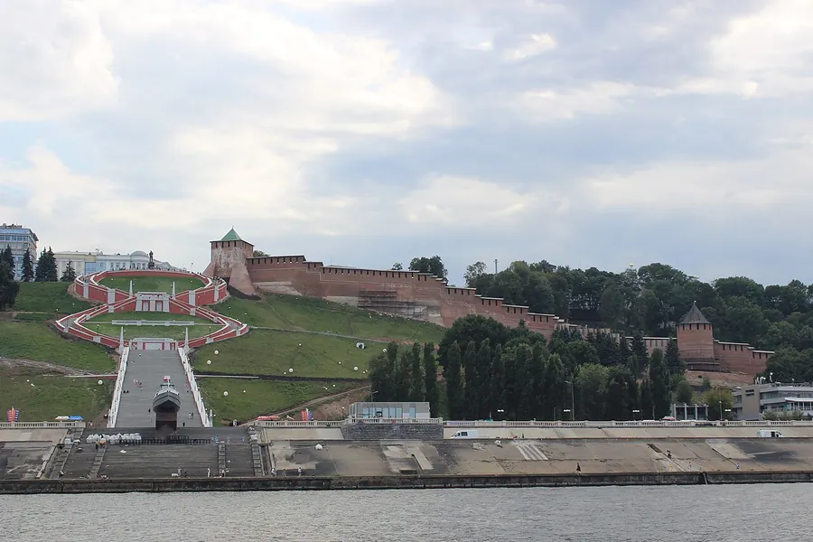
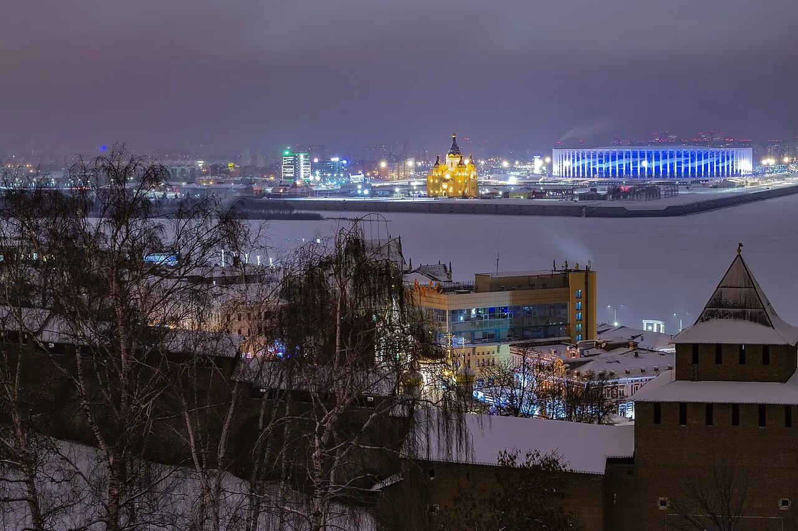
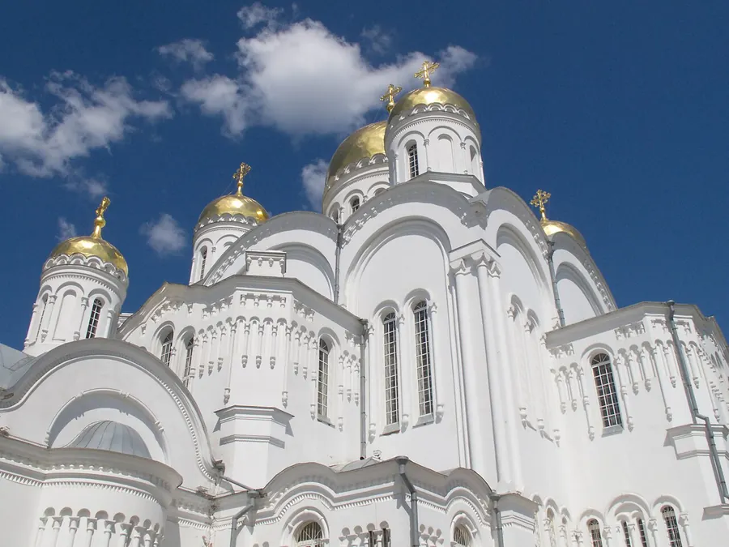
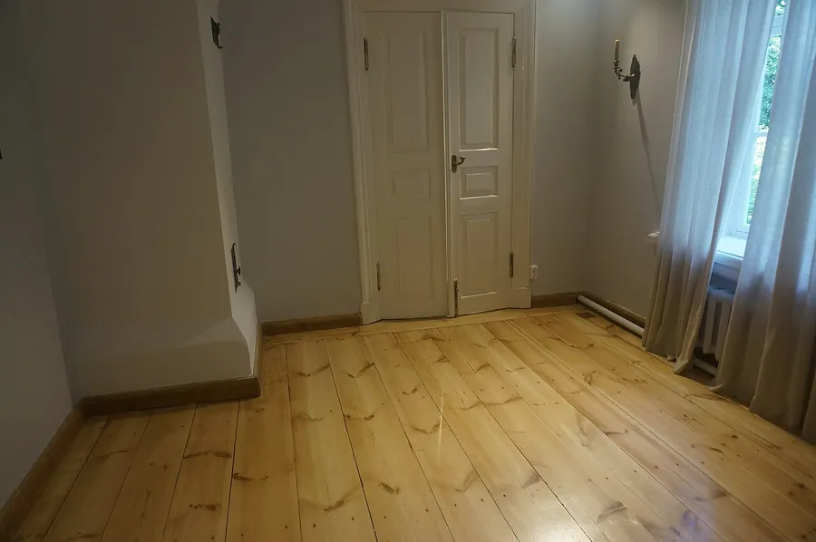
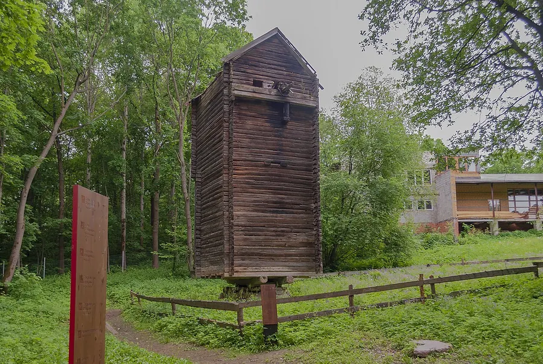

Нижегородский кремль
Кирпичная крепость стоит на высоком берегу. Со стен и башен видно Стрелку — мыс у слияния Оки и Волги.
У слияния Волги и Оки стоит старинный кремль. За пределами Нижнего Новгорода сохранились купеческие дома, ремесленные слободы и усадьба Пушкиных.

Нижний Новгород вырос на высоких холмах у слияния двух рек. В XIX веке ярмарка сделала его одним из главных торговых центров страны. В поездке по области можно соединить речную историю Нижнего, деревянное зодчество Городца и пушкинское Болдино.
Князь Юрий Всеволодович основал Нижний Новгород у слияния Волги и Оки.
Нижегородское ополчение во главе с Кузьмой Мининым и Дмитрием Пожарским участвовало в освобождении Москвы.
Макарьевскую ярмарку перенесли в Нижний Новгород.
Горьковский край преобразовали в Горьковскую область.
Горьковская область стала Нижегородской. Городу Горькому вернули имя Нижний Новгород.

Кирпичная крепость стоит на высоком берегу. Со стен и башен видно Стрелку — мыс у слияния Оки и Волги.

Архитектурный ансамбль с Троицким и Спасо-Преображенским соборами связан с почитанием Серафима Саровского.

В родовой усадьбе Пушкиных сохранилась обстановка помещичьего быта. Здесь поэт провёл знаменитую Болдинскую осень 1830 года.

В музей под открытым небом свезли образцы деревянного зодчества области, среди них крестьянские избы, амбары и мельница.
Волга делит область на лесное Заволжье и более высокое правобережье. В бассейне Керженца Керженский заповедник охраняет леса, болота и поймы.
Семёнов известен хохломской росписью по дереву. В Городце развивалась своя традиция ярких расписных изделий с цветами, птицами и конями.
Печатный городецкий пряник делают с помощью резной доски. В местном музее хранят пряничные формы и рассказывают об истории этого ремесла.